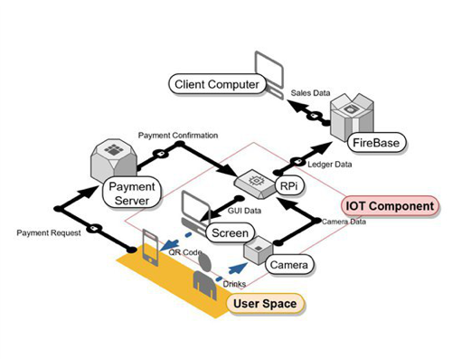

Cut-Q is a term-long project built for Introduction to Digital World course. My team identified the problem of the long queues of the drink store in SUTD, which has caused some discontentment. Hence, we decided on building an automated self service kiosk prototype which updates the online database on Firebase whenever the camera in the kiosk detects that drinks are purchased via a data pipeline. This is done with the help of computer vision algorithms. The client is then able to view the trends of the sales of the drinks on a server side desktop application to get insights such as the most popular drink for the different time periods.
Our project is chosen to be displayed at SUTD Open House.